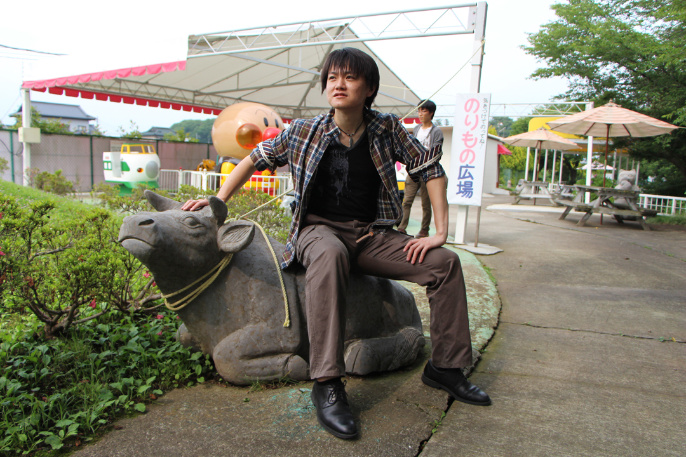

牛久 祥孝

定常的コンテンツ
講演資料
小ネタ
学歴
- 2009年3月
- 東京大学 工学部 機械情報工学科 卒業
- 2011年3月
- 東京大学 大学院情報理工学系研究科 知能機械情報学専攻 修士課程修了
- 2014年3月
- 東京大学 大学院情報理工学系研究科 知能機械情報学専攻 博士課程修了 博士(情報理工学)
職歴
- 2013年4月-2014年3月
- 日本学術振興会 特別研究員（DC2）
- 2013年6月-2013年8月
- Microsoft Research Redmond Intern
- 2014年4月-2016年3月
- 日本電信電話株式会社 コミュニケーション科学基礎研究所 研究員
- 2016年4月-2018年9月
- 東京大学 大学院情報理工学系研究科 知能機械情報学専攻 講師
- 2016年9月-現在
- 国立研究開発法人産業技術総合研究所 協力研究員
- 2016年12月-2018年9月
- 大学共同利用機関法人 人間文化研究機構 国立国語研究所 共同研究員
- 2018年4月-2018年9月
- オムロンサイニックエックス株式会社 Technical Advisor
- 2018年10月-現在
- オムロンサイニックエックス株式会社 Principal Investigator
- 2019年1月-2020年10月
- 株式会社Ridge-i Chief Research Officer
- 2020年4月-現在
- 津田塾大学 非常勤講師
- 2020年11月-2020年10月
- 株式会社Ridge-i 取締役 Chief Research Officer
- 2021年7月-現在
- 東北大学 非常勤講師
- 2021年11月-現在
- 株式会社Ridge-i Chief Research Officer
- 2022年1月-現在
- 合同会社ナインブルズ 代表
活動歴
学会
- 2016年8月-2017年8月
- 画像の認識・理解シンポジウム (MIRU) 若手プログラム実行委員
- 2017年4月-2018年6月
- International Conference on Multimedia Retrieval (ICMR) Publication Co-chairs
- 2017年8月-2018年8月
- 画像の認識・理解シンポジウム (MIRU) 若手プログラム実行委員長
- 2016年4月-現在
- コンピュータビジョン勉強会＠関東 幹事
- 2017年6月-2020年6月
- 電子情報通信学会 学会誌編集委員会 編集委員
- 2017年6月-現在
- 電子情報通信学会 パターン認識・メディア理解研究会 (PRMU) 専門委員
- 2018年3月-2019年3月
- 情報処理学会 IPSJ-ONE 企画・実施委員会 副委員長
- 2018年6月-2019年5月
- 電子情報通信学会 パターン認識・メディア理解研究会 (PRMU) 幹事補佐
- 2019年3月-2021年3月
- 情報処理学会 IPSJ-ONE 企画・実施委員会 委員長
- 2019年4月-10月
- International Conference on Computer Vision (ICCV) Workshop on Multi-Discipline Approach for Learning Concepts--Zero-Shot, One-Shot, Few-Shot and Beyond-- Organizer
- 2019年4月-現在
- 人工知能学会 論文誌編集委員会 編集委員
- 2019年4月-2021年4月
- 日本ロボット学会 事業計画委員
- 2019年6月-2020年6月
- 電子情報通信学会 パターン認識・メディア理解研究会 (PRMU) 幹事
- 2019年8月-2020年8月
- 画像の認識・理解シンポジウム (MIRU) 広報委員長
- 2020年1月-2020年11月
- 情報論的学習理論ワークショップ (IBIS) プログラム委員
- 2020年2月-2020年11月
- Asian Conference on Computer Vision (ACCV) Area Chair
- 2021年1月-現在
- 建築情報学会 理事
- 2021年2月-2021年12月
- 精密工学会 画像応用技術専門委員会 ビジョン技術の実利用ワークショップ (ViEW) プログラム委員
- 2021年2月-2021年6月
- 国立研究開発法人新エネルギー産業技術総合開発機構 (NEDO) AIアクションプラン策定委員会 委員
- 2021年3月-現在 (2025年3月予定)
- 日本ロボット学会 代議員
- 2021年6月-現在 (2023年6月予定)
- 電子情報通信学会 情報・システムソサイエティ 庶務幹事
- 2021年6月-現在 (2023年6月予定)
- 電子情報通信学会 著作権管理委員会 委員
- 2021年7月-現在 (2022年12月予定)
- Asian Conference on Computer Vision (ACCV) Industrial Chair
- 2022年1月-現在 (2022年7月予定)
- 画像の認識・理解シンポジウム (MIRU) メンターシッププログラム実行委員長
- 2022年4月-現在 (2023年3月予定)
- 電子情報通信学会 代議員
- 2022年4月-現在 (2024年3月予定)
- 日本ロボット学会 実用化技術賞選考小委員会 委員
- 2022年4月-現在
- AI活用型システム創成委員会 委員
- 2022年10月-現在 (2023年2月予定)
- 国立研究開発法人新エネルギー産業技術総合開発機構 (NEDO) ロボット技術分野におけるアクションプラン検討に係る有識者委員会 委員
- 2022年10月-現在 (2023年3月予定)
- 国立研究開発法人科学技術振興機構 (JST) 研究開発戦略センター分野別委員会 CRDS／第１AI・情報分野委員会 委員
- 2022年11月-2022年11月
- 国立研究開発法人新エネルギー産業技術総合開発機構 (NEDO) 先導研究プログラム課題設定委員会 委員
査読
- 学会
-
AAAI 2020,
ACMMM 2013 2016 2018 2019,
ACPR 2017,
BMVC 2020,
CVPR 2019 2020 2021 2022 2023,
ECCV 2020 (Outstanding Reviewer) 2022,
ICCV 2019 2021,
ICLR 2020 2021 2022 (Highlighted Reviewer) 2023,
ICML 2021 2022,
IJCAI 2018 2019,
NeurIPS 2020 2021 2022,
PCM 2018
- 論文誌
-
Advanced Robotics,
Computer Speech and Language,
IEEE Access,
International Journal of Computer Vision,
Neural Networks,
Pattern Recognition Letters,
Robotics and Automation Letters,
Speech and Language Processing,
The Visual Computer
Transactions on Affective Computing,
Transactions on Audio,
Transactions on Computer Vision and Applications,
Transactions on Intelligent Systems and Technology,
Transactions on Multimedia,
Transactions on Multimedia Computing, Communications, and Applications,
Transactions on Pattern Analysis and Machine Intelligence,
Transactions on Systems, Man and Cybernetics: Systems.
略歴
2013年日本学術振興会特別研究員およびMicrosoft Research Redmond Intern。
2014年東京大学大学院情報理工学系研究科博士課程修了、NTTコミュニケーション科学基礎研究所入所。
2016年東京大学情報理工学系研究科講師。
2018年よりオムロンサイニックエックス株式会社 Principal Investigatorおよび2019年より株式会社Ridge-i Chief Research Officer、2022年より合同会社ナインブルズ代表、現在に至る。
主としてコンピュータビジョンや自然言語処理を対象として、機械学習によるクロスメディア理解に従事。
2011年ACM Mutlimedia Grand Challenge Special Prize、2017年ACM Multimedia Open Source Software Competition Honorable Mention、2017年および2018年NVIDIA Pioneering Research Awards、2021年ヤマト科学賞など受賞。
連絡先
論文
国際論文誌（査読付き）
- Kazuhiro Ogata, Reo Gakumi, Atsushi Hashimoto, Yoshitaka Ushiku, and Shigeo Yoshida. The influence of Bouba-and Kiki-like shape on perceived taste of chocolate pieces. Frontiers in Psychology, Vol.14, 2023.
- Yutaka Maruyama, Ryo Igarashi, Yoshitaka Ushiku, and Ayori Mitsutake. Analysis of Protein Folding Simulation with Moving Root Mean Square Deviation. Journal of Chemical Information and Modeling, Vol.63, No.5, pp.1529-1541, 2023.
- Yuta Suzuki, Tatsunori Taniai, Kotaro Saito, Yoshitaka Ushiku, and Kanta Ono. Self-supervised learning of materials concepts from crystal structures via deep neural networks. Machine Learning: Science and Technology, pp.2632-2153, 2022.
- Mutsuki Nakahara, Mai Nishimura, Yoshitaka Ushiku, Takayuki Nishio, Kazuki Maruta, Yu Nakayama, and Daisuke Hisano. Edge Computing-Assisted DNN Image Recognition System With Progressive Image Retransmission. IEEE Access, Vol.10, pp.91253-91262, 2022.
- Takehiko Ohkawa, Takuma Yagi, Atsushi Hashimoto, Yoshitaka Ushiku, and Yoichi Sato. Foreground-Aware Stylization and Consensus Pseudo-Labeling for Domain Adaptation of First-Person Hand Segmentation. IEEE Access, Vol.9, pp.94644-94655, 2021.
- Taichi Nishimura, Atsushi Hashimoto, Yoshitaka Ushiku, Hirotaka Kameko, Yoko Yamakata, and Shinsuke Mori. Structure-Aware Procedural Text Generation From an Image Sequence. IEEE Access, Vol.9, pp.2125-2141, 2021.
- Hiroaki Minoura, Ryo Yonetani, Mai Nishimura, and Yoshitaka Ushiku. Crowd Density Forecasting by Modeling Patch-Based Dynamics. IEEE Robotics and Automation Letters, Vol.6, No.2, pp.287-294, 2021.
- Yusuke Mori, Hiroaki Yamane, Yoshitaka Ushiku, and Tatsuya Harada. How narratives move your mind: A corpus of shared-character stories for connecting emotional flow and interestingness. Information Processing & Management, Vol.56, No.5, pp.1865-1879, 2019.
国際学会 (査読付き)
- Yusaku Nakajima, Masashi Hamaya, Kazutoshi Tanaka, Takafumi Hawai, Felix von Drigalski, Yasuo Takeichi, Yoshitaka Ushiku, and Kanta Ono. Robotic Powder Grinding with Audio-Visual Feedback for Laboratory Automation in Materials Science. IEEE/RSJ International Conference on Intelligent Robots and Systems (IROS), 2023.
- Yusaku Nakajima, Masashi Hamaya, Yuta Suzuki, Takafumi Hawai, Felix von Drigalski, Kazutoshi Tanaka, Yoshitaka Ushiku, and Kanta Ono. Robotic Powder Grinding with a Soft Jig for Laboratory Automation in Material Science. IEEE/RSJ International Conference on Intelligent Robots and Systems (IROS), 2022.
- Keisuke Shirai, Atsushi Hashimoto, Taichi Nishimura, Hirotaka Kameko, Shuhei Kurita, Yoshitaka Ushiku, and Shinsuke Mori. Visual Recipe Flow: A Dataset for Learning Visual State Changes of Objects with Recipe Flows. International Conference on Computational Linguistics (COLING), 2022.
- Taichi Nishimura, Atsushi Hashimoto, Yoshitaka Ushiku, Hirotaka Kameko, and Shinsuke Mori. State-aware Video Procedural Captioning. ACM International Conference on Multimedia (ACMMM), 2021.
- Mutsuki Nakahara, Daisuke Hisano, Mai Nishimura, Yoshitaka Ushiku, Kazuki Maruta, and Yu Nakayama. Retransmission Edge Computing System Conducting Adaptive Image Compression Based on Image Recognition Accuracy. IEEE Vehicular Technology Conference (VTC-Fall), 2021.
- Qing Yu, Atsushi Hashimoto, and Yoshitaka Ushiku. Divergence Optimization for Noisy Universal Domain Adaptation. The IEEE Conference on Computer Vision and Pattern Recognition (CVPR), 2021.
- Ukyo Honda, Yoshitaka Ushiku, Atsushi Hashimoto, Taro Watanabe, and Yuji Matsumoto. Removing Word-Level Spurious Alignment between Images and Pseudo-Captions in Unsupervised Image Captioning. The Conference of the European Chapter of the Association for Computational Linguistics (EACL), 2021.
- Taichi Nishimura, Suzushi Tomori, Hayato Hashimoto, Atsushi Hashimoto, Yoko Yamakata, Jun Harashima, Yoshitaka Ushiku, and Shinsuke Mori. Visual Grounding Annotation of Recipe Flow Graph. Language Resources and Evaluation Conference (LREC), 2020.
- Takuhiro Kaneko, Yoshitaka Ushiku, and Tatsuya Harada. Class-distinct and class-mutual image generation with GANs. British Machine Vision Conference (BMVC), 2019.
- Mikihiro Tanaka, Takayuki Itamochi, Kenichi Narioka, Ikuro Sato, Yoshitaka Ushiku, and Tatsuya Harada. Generating Easy-to-Understand Referring Expressions for Target Identifications. The IEEE International Conference on Computer Vision (ICCV), 2019.
- Takuhiro Kaneko, Yoshitaka Ushiku, and Tatsuya Harada. Label-noise robust generative adversarial networks. The IEEE Conference on Computer Vision and Pattern Recognition (CVPR), 2019.
- Kuniaki Saito, Yoshitaka Ushiku, Tatsuya Harada, and Kate Saenko. Strong-weak distribution alignment for adaptive object detection. The IEEE Conference on Computer Vision and Pattern Recognition (CVPR), 2019
- Yang Li, Yoshitaka Ushiku, and Tatsuya Harada. Pose Graph Optimization for Unsupervised Monocular Visual Odometry. International Conference on Robotics and Automation (ICRA), 2019.
- Akane Iseki, Yusuke Mukuta, Yoshitaka Ushiku, and Tatsuya Harada. Estimating the causal effect from partially observed time series. The AAAI Conference on Artificial Intelligence (AAAI), 2019.
- Kohei Uehara, Antonio Tejero-de-Pablos, Yoshitaka Ushiku, and Tatsuya Harada. Visual Question Generation for Class Acquisition of Unknown Objects. The 15th European Conference on Computer Vision (ECCV), 2018.
- Kuniaki Saito, Shohei Yamamoto, Yoshitaka Ushiku, and Tatsuya Harada. Open Set Domain Adaptation by Backpropagation. The 15th European Conference on Computer Vision (ECCV), 2018.
- Andrew Shin, Yoshitaka Ushiku, and Tatsuya Harada. Customized Image Narrative Generation via Interactive Visual Question Generation and Answering. The 31th IEEE Computer Society Conference on Computer Vision and Pattern Recognition (CVPR), 2018. (spotlight presentation)
- Atsushi Kanehira, Luc Van Gool, Yoshitaka Ushiku, and Tatsuya Harada. Viewpoint-aware Video Summarization. The 31th IEEE Computer Society Conference on Computer Vision and Pattern Recognition (CVPR), 2018. (spotlight presentation)
- Hiroharu Kato, Yoshitaka Ushiku, and Tatsuya Harada. Neural 3D Mesh Renderer. The 31th IEEE Computer Society Conference on Computer Vision and Pattern Recognition (CVPR), 2018. (spotlight presentation)
- Kuniaki Saito, Kohei Watanabe, Yoshitaka Ushiku, and Tatsuya Harada. Maximum Classifier Discrepancy for Unsupervised Domain Adaptation. The 31th IEEE Computer Society Conference on Computer Vision and Pattern Recognition (CVPR), 2018. (oral presentation)
- Yuji Tokozume, Yoshitaka Ushiku, and Tatsuya Harada. Between-class Learning for Image Classification. The 31th IEEE Computer Society Conference on Computer Vision and Pattern Recognition (CVPR), 2018..
- Kuniaki Saito, Yoshitaka Ushiku, Tatsuya Harada, and Kate Saenko. Adversarial Dropout Regularization. The 6th International Conference on Learning Representations (ICLR), 2018.
- Yuji Tokozume, Yoshitaka Ushiku, and Tatsuya Harada. Learning from Between-class Examples for Deep Sound Recognition. The 6th International Conference on Learning Representations (ICLR), 2018.
- Katsunori Ohnishi, Shohei Yamamoto, Yoshitaka Ushiku, and Tatsuya Harada. Hierarchical Video Generation from Orthogonal Information: Optical Flow and Texture. AAAI Conference on Artificial Intelligence (AAAI), 2018. (oral presentation)
- Yusuke Mukuta, Yoshitaka Ushiku, and Tatsuya Harada. Alternating Circulant Random Features for Semigroup Kernels. AAAI Conference on Artificial Intelligence (AAAI), 2018.
- Masatoshi Hidaka, Yuichiro Kikura, Yoshitaka Ushiku, and Tatsuya Harada. WebDNN: Fastest DNN Execution Framework on Web Browser. ACM International Conference on Multimedia (ACMMM), Open Source Software Competition, pp.1213-1216, 2017.
- Masataka Yamaguchi, Kuniaki Saito, Yoshitaka Ushiku, and Tatsuya Harada. Spatio-temporal Person Retrieval via Natural Language Queries. IEEE International Conference on Computer Vision (ICCV), 2017.
- Qishen Ha, Kohei Watanabe, Takumi Karasawa, Yoshitaka Ushiku, and Tatsuya Harada. MFNet: Towards Real-Time Semantic Segmentation for Autonomous Vehicles with Multi-Spectral Scenes. IEEE/RSJ International Conference on Intelligent Robots and Systems (IROS), 2017.
- Kuniaki Saito, Yoshitaka Ushiku, and Tatsuya Harada. Asymmetric Tri-training for Unsupervised Domain Adaptation. International Conference on Machine Learning (ICML), pp.2988-2997, 2017.
- Kuniaki Saito, Andrew Shin, Yoshitaka Ushiku, and Tatsuya Harada. DualNet: Domain-Invariant Network for Visual Question Answering. IEEE International Conference on Multimedia and Expo (ICME), pp.829-834, 2017. (oral presentation)
- Andrew Shin, Yoshitaka Ushiku, and Tatsuya Harada. Image Captioning with Sentiment Terms via Weakly-Supervised Sentiment Dataset. British Machine Vision Conference (BMVC), pp.53.1-53.12, 2016.
- Yoshitaka Ushiku, Masataka Yamaguchi, Yusuke Mukuta, and Tatsuya Harada. Common subspace for model and similarity: Phrase learning for caption generation from images. IEEE International Conference on Computer Vision (ICCV), pp.2668-2676, 2015. (acceptance rate: 30.9%)
- Yoshitaka Ushiku, Masatoshi Hidaka, and Tatsuya Harada. Three guidelines of online learning for large-scale visual recognition. IEEE Conference on Computer Vision and Pattern Recognition (CVPR), pp.3574-3581, 2014. (acceptance rate: 29.9%)
- Asako Kanezaki, Shogo Inaba, Yoshitaka Ushiku, Yukihiko Yamashita, Hiroaki Muraoka, Yasuo Kuniyoshi, and Tatsuya Harada. Hard negative classes for multiple object detection. IEEE International Conference on Robotics and Automation (ICRA), pp.3066-3073, 2014.
- Yoshitaka Ushiku, Tatsuya Harada, and Yasuo Kuniyoshi. Efficient Image Annotation for Automatic Sentence Generation. ACM International Conference on Multimedia (ACMMM), pp.549-558, 2012. (full paper, acceptance rate: 20.2%)
- Yoshitaka Ushiku, Tatsuya Harada, and Yasuo Kuniyoshi. Understanding Images with Natural Sentences. ACM International Conference on Multimedia (ACMMM), Multimedia Grand Challenge, pp.679-682, 2011. (Special Prize on the Best Application of a Theoretical Framework) [pdf]
- Yoshitaka Ushiku, Tatsuya Harada, and Yasuo Kuniyoshi. Automatic Sentence Generation from Images. ACM International Conference on Multimedia (ACMMM), pp.1533-1536, 2011. (short, acceptance rate: usually 30%) [pdf]
- Tatsuya Harada, Yoshitaka Ushiku, Yuya Yamashita, and Yasuo Kuniyoshi. Discriminative Spatial Pyramid. IEEE Conference on Computer Vision and Pattern Recognition (CVPR), pp.1617-1624, 2011. (acceptance rate: 26.4%) [pdf]
- Yoshitaka Ushiku, Tatsuya Harada, and Yasuo Kuniyoshi. Improvement of Image Similarity Measures for Image Browsing and Retrieval Via Latent Space Learning between Images and Long Texts. IEEE International Conference on Image Processing (ICIP), pp.2365-2368, 2010. [pdf]
国際学会 (査読無し、ワークショップ)
- Kuniaki Saito, Yusuke Mukuta, Yoshitaka Ushiku, Tatsuya Harada. Deep Modality Invariant Adversarial Network for Shared Representation Learning. The 16th International Conference on Computer Vision Workshop on Transferring and Adapting Source Knowledge in Computer Vision (ICCV, Workshop), 2017.
- Yusuke Mukuta, Yoshitaka Ushiku, Tatsuya Harada. Spatial-Temporal Weighted Pyramid using Spatial Orthogonal Pooling. The 16th International Conference on Computer Vision Workshop on Compact and Efficient Feature Representation and Learning in Computer Vision (ICCV, Workshop), 2017.
- Takumi Karasawa, Kohei Watanabe, Qishen Ha, Antonio Tejero-De-Pablos, Yoshitaka Ushiku, Tatsuya Harada. Multispectral Object Detection for Autonomous Vehicles. The 25th Annual ACM International Conference on Multimedia (ACMMM), 2017, (workshop).
- Yoshitaka Ushiku, Hiroshi Muraoka, Sho Inaba, Teppei Fujisawa, Koki Yasumoto, Naoyuki Gunji, Takayuki Higuchi, Yuko Hara, Tatsuya Harada, and Yasuo Kuniyoshi. ISI at ImageCLEF 2012: Scalable System for Image Annotation. the 3rd Conference and Labs of the Evaluation Forum (CLEF 2012), pp.1-12, 2012.
技術報告
- Shoji Yamamoto, Antonio Tejero-de-Pablos, Yoshitaka Ushiku, and Tatsuya Harada. Conditional Video Generation Using Action-Appearance Captions. arXiv, 1812.01261, 2018.
- Andrew Shin, Yoshitaka Ushiku, and Tatsuya Harada. The Color of the Cat is Gray: 1 Million Full-Sentences Visual Question Answering (FSVQA). arXiv, 1609.06657, 2016.
国内論文誌 (査読付き)
- 牛久祥孝，原田達也，國吉康夫. 画像・長文からの潜在空間獲得による画像間類似度の改善. 情報処理学会論文誌 (IPSJ), Vol.52, No.12, pp.3496-3503, 2011. [pdf]
国内学会 (査読付き)
- Mayu Otani, Kazuhiro Ota, Yuta Nakashima, Esa Rahtu, Janne Heikkila, and Yoshitaka Ushiku. Collecting Relation-Aware Video Captions. 画像の認識・理解シンポジウム (MIRU), OS2A-6, 2019.
- Lisa Kawai, Yoshitaka Ushiku, and Tatsuya Harada. Facial Image Generation from Voice. 画像の認識・理解シンポジウム (MIRU), OS4-L3, 2018.
- Ryuei Murata, Akisato Kimura, Yoshitaka Ushiku, Takayoshi Yamashita, Yuji Yamauchi, and Hironobu Fujiyoshi. Online Learning Based on Mondrian Forests in Parallel Distributed Processing. 画像の認識・理解シンポジウム (MIRU), OS2-05, 2016.
- 牛久祥孝, 原田達也, 國吉康夫. キーフレーズ推定と文法モデルによる画像説明文生成. 画像の認識・理解シンポジウム (MIRU), IS2-05(OS3-01), 2012. (長尾賞(最優秀賞)候補論文)
- 牛久祥孝, 原田達也, 國吉康夫. 画像・文章間の類似度学習による画像説明文の自動生成. 画像の認識・理解シンポジウム (MIRU), pp.365-372, 2011. (MIRU2011インタラクティブセッション賞) [pdf]
- 牛久祥孝, 原田達也, 國吉康夫. 画像・長文からの潜在空間獲得による画像間類似度の改善. 画像の 認識・理解シンポジウム (MIRU), pp.1153-1160, 2010. [pdf]
国内学会 (査読無し)
- 中原睦貴, 久野大介, 西村真衣, 牛久祥孝, 丸田一輝, 中山悠. 画像認識精度に基づいた再送制御による無線エッジコンピューティングにおけるトラヒック削減手法. 電子情報通信学会 センサネットワークとモバイルインテリジェンス研究会 (SeMI), pp.23-28, 2021.
- 長藤圭介, 冨澤森生, 長隆之, 牛久祥孝. 金属積層造形における直接観察とプロセスパラメータ探索. 日本機械学会年次大会, オンライン, 2020.
- Ryo Yonetani, Tomohiro Takahashi, Atsushi Hashimoto, and Yoshitaka Ushiku. Decentralized Learning of Generative Adversarial Networks from Multi-Client Non-iid Data. 画像の認識・理解シンポジウム (MIRU), PS2-20, 2019.
- 川口維文, 牛久祥孝, Anna Zhu, 内田誠一. Show, Read with Attention, and Tell. 画像の認識・理解シンポジウム (MIRU), PS3-28, 2017.
- 村田隆英, 木村昭悟, 牛久祥孝, 山下隆義, 山内悠嗣, 藤吉弘亘. 教師あり学習の導入によるMondrian Forestsの効率化. 電子情報通信学会 パターン認識・メディア理解研究会 (PRMU), pp.191-196, 2016.
- 牛久祥孝, 木村昭悟, 柏野邦夫. 時刻に基づく画像検索のための反復構造の自動抽出. 画像の認識・理解シンポジウム (MIRU), SS4-26, 2015.
- 郡司直之, 樋口貴之, 安本晃基, 村岡宏是, 牛久祥孝, 原田達也, 國吉康夫. 数の画像特徴とPassive-Aggressiveを用いたfine-grained classification. 電子情報通信学会 パターン認識・メディア理解研究会 (PRMU), pp.25-30, 2013.
- 金崎朝子, 稲葉翔, 牛久祥孝, 山下裕也, 村岡宏是, 原田達也, 國吉康夫. 大規模画像データセットを用いたマルチクラス物体検出器の同時学習 物体毎に特化した負例クラスの導入. 電子情報通信学会 パターン認識・メディア理解研究会 (PRMU), pp.105-112, 2012.
- 牛久祥孝, 山下裕也, 井村純, 中山英樹, 原田達也, 國吉康夫. 複数画像特徴とクラスラベルの相関に着目した距離計量による大規模画像分類. 電子情報通信学会 パターン認識・メディア理解研究会 (PRMU), pp.1-6, 2011. (2010PRMU研究奨励賞) [pdf]
- 牛久祥孝, 中山英樹, 原田達也, 國吉康夫. Web画像と文章の大域的特徴から得る潜在的意味に基づくデータ検索 Web上での一般画像認識実現への新たなアプローチを目指して. 電子情報通信学会 パターン認識・メディア理解研究会 (PRMU), pp.45-50, 2009. [pdf]
解説記事・書籍
- 【解説記事】【ビジョンと自然言語処理】「AlexNet から10 年――深層学習によるビジョン＆ランゲージ分野への展開――」. 電子情報通信学会誌, Vol.105, No.5, pp.418-423, 2022.
- 【書籍】イマドキノCV 限られたデータからの深層学習. CV最前線, Winter号, 共立出版, 2021.
- 【書籍】Yoshitaka Ushiku. Long Short-Term Memory. In: Ikeuchi K. (eds) Computer Vision. Springer, 2020.
- 【解説記事】牛久祥孝. 画像に関連した言語生成の取組み. 人工知能学会誌，Vol.34，No.4, pp.483-490，2019.
- 【解説記事】牛久祥孝. 画像キャプション生成とその派生タスク. 画像ラボ, Vol.30，No.4, pp.28-31，2019.
- 【書籍】編著：中島秀之，浅田稔，橋田浩一，松原仁，山川宏，栗原聡，松尾豊. AI事典 第3版 「言語と画像や音声の相互変換」. 近代科学社, 2019.
- 【解説記事】牛久祥孝. 画像/動画の高精度キャプション生成技術. 光学. Vol.47, No.12, pp.502-508, 2018.
- 【解説記事ゲストエディタ】牛久祥孝. 視覚・言語融合の最前線. 映像情報メディア学会誌. Vol.72, No.9, pp.650-675, 2018.
- 【解説記事】牛久祥孝. 画像・動画キャプション生成. 映像情報メディア学会誌. Vol.72, No.5, pp.650-654, 2018. (ベストオーサー)
- 【書籍】米谷竜, 斎藤英雄編著, 池畑諭, 牛久祥孝, 内山英昭, 内海ゆづ子, 小野峻佑, 片岡裕雄, 金崎朝子, 川西康友, 齋藤真樹, 櫻田健, 高橋康輔, 松井勇佑. コンピュータビジョン―広がる要素技術と応用. 未来へつなぐデジタルシリーズ, 37巻, 共立出版, 2018.
- 【解説記事】牛久祥孝. 私のブックマーク 視覚と自然言語の融合研究. 人工知能:人工知能学会誌. Vol.32, No.1, pp.136-143, 2016.
- 【解説記事】牛久祥孝. ACM Multimedia 参加報告. 情報処理. Vol.56, No.3, p.286, 2015.
基調講演・招待講演・講師
- 【招待講演】牛久祥孝. 人工知能と建築. 建築学会 デザイン科学数理知能小委員会・研究集会, オンライン, 日本, 2022/02/24
- 【招待講演】牛久祥孝. 次のAIとDXの実現可能性について~具体的なアクションプラン・社会実装例の解説~. 株式会社POL WEBセミナー, オンライン, 日本, 2022/02/16
- 【招待講演】牛久祥孝. Vision and Languageとその先へ. 統計・機械学習若手シンポジウム, オンライン, 日本, 2022/02/09
- 【招待講演】牛久祥孝. マテリアル探索を飛躍的に加速する機械学習基盤技術. 兵庫県立大学 兵庫県MI研究会, オンライン, 日本, 2022/01/19
- 【講師】牛久祥孝. AIと人間の共生に向けて～世界最先端の状況～. JICA（インドネシア知的財産総局）, オンライン, インドネシア, 2022/01/13.
- 【招待講演】Yoshitaka Ushiku. Challenges of Integrating Vision and Language. International Display Workshops, online, Japan, 2021/12/01.
- 【招待講演】牛久祥孝. OSXのビジョン＆ランゲージが目指す人と機械の融和. コンピュータ産業研究会, オンライン, 日本, 2021/11/24.
- 【講師】牛久祥孝. AIと人間の共生に向けて～世界最先端の状況～. JICA（ベトナム国家知的財産庁）, オンライン, ベトナム, 2021/11/17.
- 【招待講演】牛久祥孝. イメージングAIの「第7世代」と今後のアクションプラン. GPU 2021, オンライン, 日本, 2021/11/05.
- 【招待講演】牛久祥孝. 建築情報学会にAIどうでSHOW. Archi Future 2021, オンライン, 日本, 2021/10/28.
- 【招待講演】牛久祥孝. 【xTalk #14】牛久祥孝×落合陽一×菅野裕介. JST CREST xDiversity, オンライン, 日本, 2021/09/22.
- 【招待講演】牛久祥孝. Transformer. JEITA認識形入力方式標準化専門委員会, オンライン, 日本, 2021/09/16.
- 【招待講演】牛久祥孝. 次のAIと医療のかかわりについて. 日本緑内障学会, オンライン, 日本, 2021/09/12.
- 【招待講演】牛久祥孝. マルチモーダル理解～Vision and Languageとその先へ. 愛媛大学DS研究セミナー, オンライン, 日本, 2021/08/24.
- 【招待講演】牛久祥孝. 次のAIとDXの実現可能性について. 日本ディープラーニング協会 CDLE勉強会, オンライン, 日本, 2021/08/12.
- 【招待講演】牛久祥孝. FIREの話. MIRU 2021 若手プログラム, オンライン, 日本, 2021/07/24.
- 【招待講演】牛久祥孝. CVPR技術報告会. 日本ディープラーニング協会, オンライン, 日本, 2021/07/19.
- 【講義】牛久祥孝. 多様なデータを理解する：マルチモーダル機械学習の最前線. 埼玉工業大学講義（大山航先生）, オンライン, 日本, 2021/07/14.
- 【招待講演】牛久祥孝. 企業研究者の「熱い想い」をお届けします. 情報処理学会全国大会, オンライン, 日本, 2021/03/19.
- 【招待講演】牛久祥孝. マルチモーダル機械学習とマテリアルへの応用可能性. 応用物理学会春季学術講演会, オンライン, 日本, 2021/03/16.
- 【招待講演】牛久祥孝. マルチモーダル理解～Vision and Languageとその先へ. 京都大学学術情報メディアセンターセミナー, 京都, 日本, 2021/03/12.
- 【招待講演】Yoshitaka Ushiku. Multimodal Understanding: Vision and Language, and its Beyond. International Workshop on Frontiers of Computer Vision, Daegu, Korea, 2021/02/22.
- 【招待講演】牛久祥孝. AIと人間の共生に向けて ～世界最先端の状況～. Hitachi Intellectual Assets Forum, オンライン, 日本, 2020/12/01.
- 【基調講演】牛久祥孝. 機械学習を『民主化』する取り組み. SB C&Sセミナー「AI・ディープラーニング研究者が話を聞きたい研究者の話と開発基盤の最新動向」, 2020/1/17.
- 【基調講演】牛久祥孝. 深層学習によるビジョン＆ランゲ―ジの世界. ビジョン技術の実利用ワークショップ(ViEW), 2019/12/5.
- 【招待講演】Yoshitaka Ushiku. Deep Learning for Natural Language Processing and Computer Vision. Tutorial on Asian Conference on Machine Learning, Nagoya, Japan, 2019/11/17.
- 【招待講演】牛久祥孝. 画像・映像理解と自然言語への架け橋. 情報処理学会連続セミナー第3回, 2019/9/26.
- 【招待講演】牛久祥孝. 多様なデータへのキャプションを自動で生成する技術の創出. 情報科学技術フォーラム(FIT), 2019/9/3.
- 【招待講演】牛久祥孝. ビジョン＆ランゲージ～「意図」をどのようにモデリングするか？ 画像センシングシンポジウム(SSII), 2019/6/12.
- 【招待講演】牛久祥孝. 機械学習による生成技術とその応用展開. ITOC機械学習セミナーシリーズVol.3, 2019/3/25.
- 【講師】牛久祥孝. ～AI・IoT講座～ 人工知能（AI）基礎講座. 独立行政法人工業所有権情報・研修館, 2019/2/21および2019/3/11.
- 【招待講演】牛久祥孝. 機械学習による生成技術とその応用展開. ISID エンジニアリングフォーラム, 2018/11/28.
- 【招待講演】牛久祥孝. 視覚と対話の融合研究. 人工知能学会 言語・音声理解と対話処理研究会(SIG-SLUD), 2018/11/21.
- 【招待講演】牛久祥孝. Deep Learningによる視覚・言語融合の最前線. NLP若手の会(YANS), 2018/8/28.
- 【招待講演】牛久祥孝. 敵対的学習による動画生成とドメイン適応. 人工知能学会 第75回人工知能セミナー, 2018/8/27.
- 【招待講演】牛久祥孝. Deep Learningによる視覚・言語融合の最前線. 精密工学会 画像応用技術専門委員会(IAIP), 2018/7/13.
- 【招待講演】牛久祥孝. 視覚と言葉をつなげる技術. 情報処理学会 IPSJ-ONE, 2018/3/15.
- 【招待講演】牛久祥孝. Deep Learningによる視覚・言語融合の最前線. 情報処理学会 コンピュータビジョンとイメージメディア研究会(CVIM), 2018/3/2.
- 【招待講演】牛久祥孝. Deep Learningによる視覚・言語融合の最前線. 映像情報メディア学会 冬季大会, 2017/12/13.
- 【招待講演】牛久祥孝. Deep Learningによる視覚・言語融合の最前線. 画像符号化シンポジウム(PCSJ) / 映像メディア処理シンポジウム(IMPS), 2017/11/22.
- 【基調講演】Yoshitaka Ushiku. Frontiers of Vision and Language: Bridging Images and Texts by Deep Learning. Workshop of Machine Learning under International Conference on Document Analysis and Recognition, 2017/11/11.
- 【招待講演】Kuniaki Saito, Yoshitaka Ushiku, and Tatsuya Harada. Asymmetric Tri-training for Unsupervised Domain Adaptation. International Conference on Machine Learning. 第20回画像の認識・理解シンポジウム, 2017/08/10.
- 【招待講演】牛久祥孝. Deep Learning による視覚×言語融合の最前線. ABEJA Technopreneur College, 2017/06/30.
- 【招待講演】Yoshitaka Ushiku. Recognize, Describe, and Generate: Introduction of Recent Work at MIL. GPU Technology Conference, 2017/05/11.
- 【招待講演】牛久祥孝. Deep Learning による視覚×言語融合の最前線. 電子情報通信学会総合大会 企画講演セッション「もっと知りたい！ Deep Learning 〜基礎から活用ノウハウ，応用まで〜」, 2017/03/22.
- 【招待講演】牛久祥孝. 視覚×言語の最前線. ステアラボ人工知能シンポジウム, 2017/03/12.
- 【招待講演】牛久祥孝. 画像キャプションの自動生成. 第16回全脳アーキテクチャ勉強会～人工知能は意味をどう獲得するのか～＠リクルートテクノロジーズ, 2016/10/12.
- 【招待講演】Yoshitaka Ushiku, Masataka Yamaguchi, Yusuke Mukuta, and Tatsuya Harada. Common subspace for model and similarity: Phrase learning for caption generation from images. 第19回画像の認識・理解シンポジウム, 2016/08/02.
- 【招待講演】牛久祥孝. 画像キャプションの自動生成. 第19回画像の認識・理解シンポジウム (チュートリアルセッション), 2016/08/01.
- 【招待講演】牛久祥孝. 画像キャプションの自動生成. 第3回ステアラボ人工知能セミナー＠千葉工業大学 (スカイツリータウン), 2016/06/29.
- 【招待講演】牛久祥孝. 画像キャプションの自動生成. 人工知能セミナー第7回 「自然言語処理のＡＩの最新動向」＠産総研, 2016/06/21.
- 【招待講演】牛久祥孝. 画像キャプションの自動生成. 確率場と深層学習に関する第1回CRESTシンポジウム＠早稲田大学, 2016/01/13.
- 【招待講演】Yoshitaka Ushiku, Tatsuya Harada, and Yasuo Kuniyoshi. Efficient Image Annotation for Automatic Sentence Generation. Greater Tokyo Area Multimedia/Vision Workshop, 2012/08/30.
研究資金
- 2021-2025. JST 未来社会創造事業（本格研究：「共通基盤」領域）「革新的な知や製品を創出する共通基盤システム・装置の実現」. 分担(代表:長藤圭介). マテリアル探索空間拡張プラットフォームの構築. 18,460万円.
- 2019-2020. JST 未来社会創造事業（探索加速型：「共通基盤」領域）「革新的な知や製品を創出する共通基盤システム・装置の実現」. 分担(代表:小野寛太). 数理科学を活用したマルチスケール・マルチモーダル構造解析システム. 350万円.
- 2019-2020. JST ACT-I（加速フェーズ）ACT-I「情報と未来」領域. 代表. 多様なデータへのキャプションを自動で生成する技術の創出. 2000万円.
- 2017-2018. JST ACT-I「情報と未来」領域. 代表. 多様なデータへのキャプションを自動で生成する技術の創出. 300万円.
- 2017-2021. JSPS 基盤研究(S). 分担(代表:内田誠一). 機械可読時代における文字科学の創成と応用展開. 2242万円.
受賞およびコンペティション
- 2022. 教育功労賞. 2021年度 電子情報通信学会.
- 2021. 優秀発表賞. 2020年度 電子情報通信学会センサネットワークとモバイルインテリジェンス研究会 (SeMI). ※当該研究により主著者の中原睦貴氏は同 若手研究奨励賞およびIEEE VTS Tokyo/Japan Chapter 2021 Young Researcher's Encouragement Awardを受賞.
- 2021. 第8回ヤマト科学賞.
- 2019. インタラクティブセッション賞. 画像の認識理解シンポジウム (MIRU2019).
- 2018. ベストオーサー. 《特集A1》画像・動画キャプション生成. 映像情報メディア学会誌.
- 2018. NVIDIA Pioneering Research Awards for Neural 3D Mesh Renderer.
- 2017. NVIDIA Pioneering Research Awards for Asymmetric Tri-training for unsupervised domain adoptation.
- 2017. Honorable Mention. ACM Multimedia Open Source Software Competition.
- 2016. First place in the abstract image task. Visual Question Answering Challenge 2016.
- 2012. First place in the fine-grained classification task, second place in the classification task. Large Scale Visual Recognition Challenge 2012 (ILSVRC2012).
- 2011. Special Prize on the Best Application of a Theoretical Framework. ACM Mutlimedia Grand Challenge.
- 2011. Third place in the classification task, second place in the detection task. Large Scale Visual Recognition Challenge 2011 (ILSVRC2011).
- 2011. インタラクティブセッション賞. 画像の認識理解シンポジウム (MIRU2011).
- 2010. 研究奨励賞. 2009年度 電子情報通信学会パターン認識・マルチメディア理解研究会 (PRMU).
- 2010. Third place. Large Scale Visual Recognition Challenge 2010 (ILSVRC2010).
メディア
- 2023/10/16. オムロン、かしこく学ぶ・動く・繋ぐAIロボット実現へ. https://www.watch.impress.co.jp/docs/news/1539073.html. Impress Watch.
- 2023/08/21. オムロンが料理の自動化？ 近未来デザインから新しいモノづくりの軸を確立. https://monoist.itmedia.co.jp/mn/articles/2308/18/news085.html. MONOist.
- 2023/06/22. オムロン サイニックエックス、近未来デザインの研究開発集団 自律、自走、自由な発想 しがらみ徹底排除. https://dempa-digital.com/article/446028. 電波新聞.
- 2022/12/23. 「賢すぎるAI」の大競争時代 画像生成AIは一端に過ぎない. https://wedge.ismedia.jp/articles/-/28876. Wedge.
- 2022/10/31. AI、ノーベル賞めざす「研究者」に 論文読み自ら仮説. https://www.nikkei.com/article/DGXZQOUC138PB0T11C22A0000000/. 日本経済新聞.
- 2022/01/11. グリーンAIへスタートアップ知恵 空調機使わず省電力. https://www.nikkei.com/article/DGXZQOUC05C0G0V00C22A1000000/. 日本経済新聞.
- 2021/07/26. 画像とテキストを融合し理解する「ビジョン＆ランゲージ」. https://forbesjapan.com/articles/detail/43563. ForbesJAPAN9月号.
- 2021/02/06. AIが絵を描いたら、異色のモナリザに 革新は間近. https://www.nikkei.com/article/DGXZQOGG264N10W1A120C2000000/. 日本経済新聞.
- 2019/12/16. ヒントンに敗れた男、牛久祥孝氏が語る画像認識のトレンド「ディープラーニングの次のトレンドは情報変換」. https://ainow.ai/2019/12/16/181774/. AINOW.
- 2019/09/01. 「AIのゴッドファーザー」雌伏の30年 華麗なるAI人脈(笑). https://www.nikkei.com/article/DGXMZO49075690X20C19A8000000/. 日本経済新聞.
- 2019/04/06. AI研究者、大学脱出 企業で基礎研究 裁量大きく. https://www.nikkei.com/article/DGXMZO43385830V00C19A4TJM000/. 日本経済新聞.
- 2018/04/26. オムロンが新会社サイニックエックスを新設、慶大教授らと研究開発を加速. https://www.sbbit.jp/article/cont1/34865. ビジネス+IT.
- 2018/04/25. 「近未来をデザインする」 オムロンサイニックエックス株式会社設立. https://ainow.ai/2018/04/25/137445/. AINOW.
- 2018/01/25. 画像認識技術で説明文を生成 東大の牛久講師. https://www.nikkei.com/article/DGXMZO26087170U8A120C1X11000/. 日本経済新聞.
- 2017/11/08. 拓く研究人（１７８）東京大学大学院情報理工学系研究科講師・牛久祥孝氏（３１歳）. https://www.nikkan.co.jp/articles/view/00449939/0/106. 日刊工業新聞.
- 2017/08/23. ZIP! 日本テレビ.
- 2003/09/12. 全国高等学校クイズ選手権. 日本テレビ.